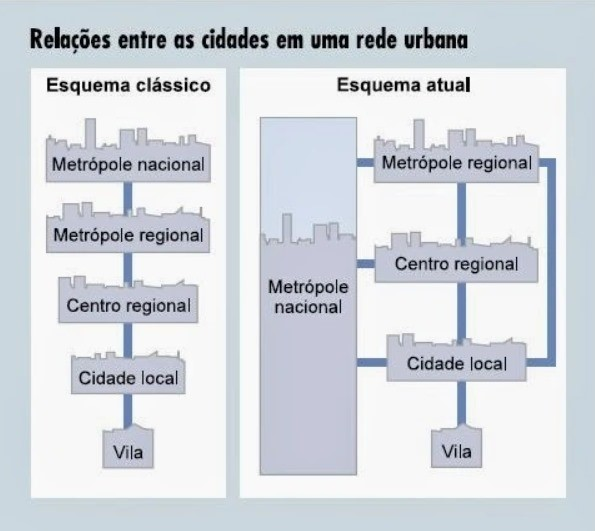

Hierarquia Urbana
É a maneira de organização por complexidade econômica entre as cidades, trazendo a importância de uma cidade e a relação de subordinação com as outras. Traz uma relação de dependência econômica de algumas cidades para outras, formando uma cadeia de cidades dependentes e economicamente interligadas entre si.
Essa hierarquia, além de fatores econômicos, é constituída pelo seu tamanho, quantidade habitacional e variedade e quantidade de variedade de bens e serviços oferecidos. Quanto mais a importância no processo produtivo, maior é a usa colocação na hierarquia urbana.
Entretanto, havia um modelo clássico desta hierarquia que sofreu alterações, por fatores como a globalização e a evolução dos meios de comunicação e transportes. mostrado na imagem abaixo:

Além dessa hierarquia comum, existe a hierarquia urbana mundial, contendo as cidades globais, metrópoles nacionais e metrópoles regionais.
Cidades Globais: são os principais polos da hierarquia urbana nacional, que possuem uma vasta quantidade populacional, sendo a maioria megacidades(mais de 10 milhões de pessoas) e uma complexa economia. Essas cidades historicamente foram as primeiras a se industrializarem no mundo e em seus países e abrigam as principais sedes e centros de negócios das empresas multinacionais.
Exemplos de cidades: Nova York, Paris, Londres, Buenos Aires, São Paulo e Rio de Janeiro.
Metrópoles Nacionais: são cidades com complexa e avançada organização econômica, com grande quantidade de habitantes, todavia, o nível econômico não gera uma influência além dos seus países e regiões territoriais
Exemplos de cidades: Belo Horizonte, Porto Alegre, Curitiba e Brasília.
Metrópoles Regionais: são cidades que a sua importância equivalem apenas ao nível regional, com relação de subordinação indireta ou direta às metrópoles nacionais e cidades globais.
Exemplos de cidades: Goiânia, Cuiabá,Campinas e Belém.